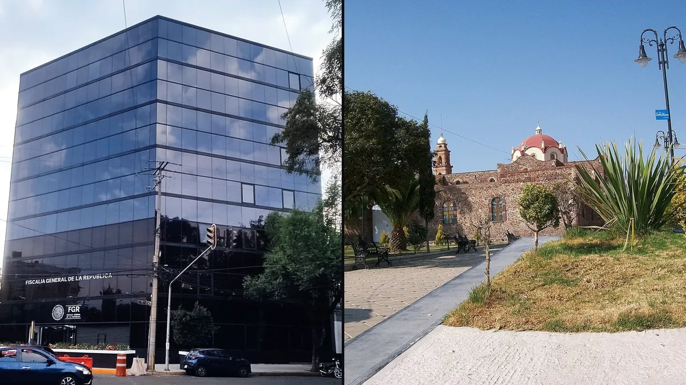

OKpolítico
OKpolíticoAsesinan a dos agentes de la FGR en Nopaltepec

ACTUALIZADO · Dos agentes de la Fiscalía General de la República fueron asesinados en una emboscada armada en la comunidad de San Felipe Teotitlán, Nopaltepec, mientras realizaban labores de investigación.
Compartir por WhatsAppActualización 16:36 h
Ignacio Freddi Malváez y Enrique Rebollo, servidores de la subsede de Texcoco de la Fiscalía General de la República, fueron atacados a balazos por sujetos armados mientras circulaban en un Nissan Versa blanco oficial en la comunidad de San Felipe Teotitlán, municipio de Nopaltepec, Estado de México. Uno de los agentes murió en el lugar y el otro falleció en el hospital tras recibir atención médica.
El ataque se produjo poco más de un mes después de otro homicidio de agentes de la FGR en el Estado de México, el 12 de octubre, cuando un investigador fue abatido durante una operación policial en Almoloya de Juárez. Hasta la fecha no se ha establecido una relación directa entre ambos incidentes ni se ha identificado a los agresores.
✉️ Recibe lo importante del día en tu correo. Suscríbete gratis →El gobernador del Estado de México, quien ha expresado su profunda preocupación por la violencia que afecta a la región, ordenó la movilización de las fuerzas de seguridad de los tres niveles de gobierno para reforzar la presencia policial en Nopaltepec y en los municipios cercanos. La Fiscalía General de Justicia del Estado de México asumió la investigación del caso, buscando esclarecer el móvil del ataque y localizar a los responsables.
La Fiscalía General de la República ha anunciado que continuará con la operación de búsqueda y que se mantendrán las investigaciones en curso. El caso ha generado una alerta sobre la creciente violencia en la zona y la necesidad de reforzar la seguridad en las rutas de investigación federal.
En los días siguientes, se han iniciado patrullajes y se ha reforzado la vigilancia en la zona, aunque hasta la fecha no se han reportado detenciones relacionadas con el homicidio. La comunidad y las autoridades locales esperan una pronta resolución del caso y la imposición de sanciones a los responsables.
Actualización 14:35 h
El 19 de noviembre de 2026, en la comunidad de San Felipe Teotitlán, municipio de Nopaltepec, dos servidores públicos de la Fiscalía General de la República (FGR) fueron atacados a balazos mientras circulaban en un vehículo oficial Nissan Versa. Los agentes, Ignacio Freddi Malváez y Enrique Rebollo, adscritos a la subsede de Texcoco, uno de ellos falleció en el lugar y el otro quedó gravemente herido y fue trasladado a un hospital.
El ataque ocurrió durante una persecución de presuntos responsables del robo de combustible, actividad que la FGR ha intensificado tras la caída de la red de huachicoleros que operaba en la zona. El operativo, que se inició en la madrugada, fue interceptado por un grupo armado que disparó desde otro vehículo, dejando a uno de los agentes sin vida y al otro gravemente herido.
La muerte del agente fallecido suma tres homicidios de servidores federales en el Estado de México en los últimos dos meses, lo que ha generado una movilización de fuerzas de seguridad de los tres niveles de gobierno y una operación conjunta de la FGR y la Fiscalía General de Justicia del Estado de México para esclarecer el móvil y localizar a los agresores.
La gobernadora Delfina Gómez Álvarez y la FGR han declarado que la investigación se mantiene activa y que se coordinarán con las autoridades locales para garantizar la seguridad de la población. Se espera que el operativo continúe en la zona y que se realicen detenciones una vez se identifiquen los responsables.
La comunidad de Nopaltepec ha sido objeto de varias operaciones de seguridad en los últimos meses, y el incidente refuerza la percepción de inseguridad en la región, especialmente en torno a las actividades de huachicoleros y la protección de los servidores públicos.
Actualización 14:13 h
El 20 de noviembre a las 09:10 horas, una camioneta de la empresa Lock, que transportaba efectivo a una sucursal del BBVA en la Plaza Aragón, fue interceptada por hombres armados en la colonia Rinconada de Aragón. Durante el intercambio de disparos, un hombre murió en el lugar.
El ataque forma parte de un aumento reciente de robos a vehículos de valores en el Estado de México, donde las autoridades han registrado más de 30 intentos de asalto en los últimos tres meses. Los delincuentes buscaban el dinero que el custodio llevaba en la camioneta, pero no lograron concretar el robo y huyeron del sitio.
Los custodios, junto con la Guardia Nacional, la Policía Municipal y la Secretaría de la Defensa Nacional, se movilizaron rápidamente para contener la zona y proteger la sucursal bancaria. La Fiscalía General de Justicia del Estado de México inició la investigación y mantiene la zona bajo custodia mientras se recaban pruebas.
La presidenta Claudia Sheinbaum declaró que el estado continuará reforzando la seguridad en las zonas comerciales y que la Fiscalía seguirá buscando a los responsables. La Secretaría de la Defensa Nacional y la Marina permanecen en alerta para prevenir futuros incidentes en la región.
Hasta la fecha, no se han detenido sospechosos y la investigación continúa. La Fiscalía busca a los responsables del homicidio y del intento de asalto, y las autoridades prometen ampliar la presencia policial en la zona para evitar que se repita el suceso.
Actualización 14:08 h
El 20 noviembre de 2026, dos servidores públicos de la Fiscalía General de la República (FGR) fueron emboscados y disparados por un vehículo desconocido en la comunidad de San Felipe Teotitlán, municipio de Nopaltepec, Estado de México. Uno de los agentes murió en el lugar y el otro resultó herido.
El ataque ocurrió en la comunidad de San Felipe Teotitlán.
La FGR ha declarado que la investigación del incidente está a cargo de la dependencia federal.
El caso sigue en curso y la FGR ha anunciado que continuará con la búsqueda de los responsables, subrayando la importancia de proteger a los agentes que llevan a cabo la lucha contra el robo de combustible en la región.
Actualización 12:28 h
El 19 de noviembre, dos elementos de la Fiscalía General de la República (FGR) fueron emboscados a balazos mientras realizaban una ronda de vigilancia en un Nissan Versa blanco en la comunidad de San Felipe Teotitlán, municipio de Nopaltepec, Estado de México. La emboscada dejó a un agente fallecido en el lugar y a su compañero gravemente herido, quien fue trasladado en helicóptero a un hospital de la Ciudad de México.
El ataque se produjo durante una persecución de presuntos responsables del robo de combustible, actividad que la FGR había estado investigando en la zona. Los agentes, adscritos a la Subsede de Texcoco, estaban en ruta cuando sujetos armados dispararon directamente contra ellos desde otro vehículo.
La FGR y la Fiscalía General de Justicia del Estado de México (FGJEM) han iniciado las investigaciones correspondientes. Se desplegaron fuerzas de seguridad de los tres niveles de gobierno para resguardar la zona y localizar a los agresores, pero hasta la fecha no se han reportado detenidos ni se han revelado los motivos del ataque.
Las autoridades han señalado que el operativo continúa y que se espera avanzar en la identificación de los responsables. La comunidad y los servidores públicos siguen en alerta mientras se esclarecen los hechos.
La muerte del agente y la gravedad de las lesiones del herido han generado preocupación en el sector de la seguridad pública, reforzando la necesidad de fortalecer la presencia policial en las rutas de huachicoleros y de mejorar la coordinación entre las dependencias federales y estatales.
Un agente federal murió en el lugar y el otro resultó gravemente herido, tras ser atacados a balazos desde otro vehículo mientras transitaban en un Nissan Versa oficial. El segundo agente fue trasladado de inmediato al Hospital de Axapusco y, debido a la gravedad de sus lesiones, posteriormente evacuado en helicóptero a un hospital de la Ciudad de México, donde permanece internado.
El ataque ocurrió en el contexto de la intensa lucha contra el huachicol, un delito que ha generado cientos de homicidios y daños a la infraestructura petrolera en el Estado de México. En los últimos meses, la FGR y la Fiscalía General de Justicia del Estado han intensificado los operativos en la zona para desarticular las redes de robo de combustible.
Tras la agresión, autoridades federales y estatales desplegaron un operativo de seguridad en la zona, con la participación de la Secretaría de Seguridad Pública, la Secretaría de la Defensa Nacional y la Secretaría de la Marina, para resguardar el sitio y apoyar en las diligencias. La investigación quedó a cargo de la FGR, con la colaboración de las autoridades estatales.
Hasta la fecha, no se han reportado detenidos ni se han revelado las identidades de los agresores. La Fiscalía General de la República ha declarado que continuará con las investigaciones y que se mantendrá la coordinación con las dependencias estatales para esclarecer los hechos.
El caso ha generado preocupación entre las comunidades locales y ha reforzado la demanda de mayor presencia de las fuerzas de seguridad en las rutas de huachicol. Se espera que la FGR y la Fiscalía General de Justicia del Estado de México intensifiquen las operaciones de vigilancia y persecución en la región.
Actualizado 12:08 h (centro de México). Información en desarrollo; OKpolítico ampliará esta nota con datos verificados y el video explicativo.
Contexto
El ataque ocurrió contra elementos de la Fiscalía General de la República (FGR) en el municipio de Nopaltepec, Estado de México. Este incidente se enmarca en la estrategia federal y estatal para combatir el robo de hidrocarburos, conocido como huachicol, una actividad ilícita que afecta gravemente la infraestructura petrolera y la seguridad pública en diversas regiones del país. La zona donde se registró la agresión es un punto crítico donde las autoridades han intensificado operativos recientes para desarticular redes criminales dedicadas a este delito.
La importancia de este suceso radica en la escalada de violencia que enfrentan las fuerzas de seguridad durante sus labores de vigilancia y persecución contra grupos delictivos. La colaboración entre la Secretaría de la Defensa Nacional, la Secretaría de la Marina y las fiscalías busca recuperar el control en rutas estratégicas. La situación mantiene en alerta a las comunidades locales, quienes demandan mayor presencia policial ante el riesgo constante derivado de estas actividades ilícitas.
Sigue viendo
- 📺 Detienen a Lili Campos: el esquema de 62 mdp en lavado fantasma
- 📺 La matanza de Aguas Blancas: el expediente de 1995
- 📺 DEA acusa nexos políticos-cárteles: ¿cooperación o injerencia?
- 📰 Muere Peter Hernandez, padre de Bruno Mars, a los 74 años
- 📰 Morena definirá el miércoles estrategia para renovar presidencia del INE ante falta de acuerdos
- 📰 Petro advierte sobre golpe de Estado en Colombia tras denuncias de senadores de oposición
Con información de
Diario Evolución · todotexcoco.com · La Jornada Estado de México · Agencia NVM · DigitalMex · Quadratín Estado de México · Amexi · El Sol de México · Capital México · Milenio · SDP Noticias · DigitalMex Periodismo confiable · Heraldo Estado de México · Ángulo 7 · El Horizonte · AD Noticias · Quadratín Edomex